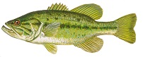
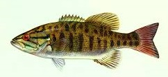
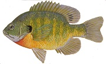
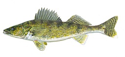
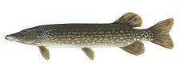
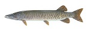
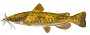
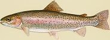

Fish Species
Click the image to get a bigger view of the fish.
One of the more popular sport fish to capture. Best spot to find them
are in the weeds in warm months. They love warm water and will strike just
about anything. Go weedless to prevent snagging due to their
habitat. Always match the hatch. In Wisconsin, we have crayfish and panfish.
What anglers will do is mimic a crayfish with a crankbait or use a
swimbait that looks like a bluegill. Don't be afraid if you catch a
Northern Pike while bass fishing. Largemouth Bass total
daily bag limit is 5.
A relative to the Largemouth Bass. People love catching both bass, but
the smallmouth bass is a difficult catch. Their preferred habitat is
rocky streams or anywhere that has rocks. Best time to fish them is
in June, after spawning, and early fall. To catch one, use baits that
sit on the surface of the water. These are referred to as topwater
baits. Use light gear and cast into rock beds or logs.
Smallmouth Bass total daily bag limit is 0.
The picture is a bluegill. It's one of the many species classified
as a panfish. Other fish include Pumpkinseed, Yellow Perch, White and
Black Crappie (Crappie is pronunced "croppie"). Crappie pronunciation
is always a big debate. Panfish usually remain in shallow water
around vegitation. Put a bobber on your line, a hook, and a split
shot weight above your hook. Great baits to use are wax worms,
commonly called waxies, and earthworms. Wax worms have the greatest
results. Be careful on the time of year you fish. August panfishing,
your need a small hook. There are a lot of baby panfish out.
Panfish have a 25 fish in total daily bag limit.
Walleye are probably the spookiest looking fish. They don't like
pretty but they make up for it in taste. Fresh walleye is the best
fish to eat. These fish are easy to confuse with sauger. Best way to
tell these two fish apart is, walleye have a spot of white on
their caudal fin. These fish are best caught in the early morning
and at night. These fish are in the shallows in the night and
early mornings. During the day, you want to fish deep waters.
Good bait to use are crankbaits when you fish during the day.
The bag limit for walleye is 5. Chippewa County is in Ceded Territory
and our bag limit is only 3. This information matter becaues you can
be fined for having over the bag limit.
These are aggressive fish. If you handle them improperly, you can
kill them. For their nature, it's surprsing how delicate they are.
These predators hide in weed beds waiting for prey to pass by them.
These fish have sharp teeth and having a steel leader increases your
hook up ratio. They can bite through fishing line. Any bait
that mimics a dying fish will attract them, but just about anything
will lure them in. Before going out for the day, see
where your county is in relation to U.S. Highway 10. If your north,
you can 5 pike. If your south, you can only bag 2.
Some of Chippewa County is north of U.S. Highway 10.
(Some cities north of Highway 10: Chippewa Falls, Cornell, Menomonie)
Wisconsin's State Fish! And the largest predatory fish in Wisconsin.
This fish looks similar to the Northern Pike. When these two fish
breed together, they make a Tiger Musky. An unnamed source says Bob Lake,
a lake a few miles outside of Bloomer, has some Tiger Musky. Musky
lurk in weed beds and old logs for prey. And typically live alone.
Tackle you should have on hand is steel leaders. These fish can
be 50 inches long and will have a good fight. And you don't want it
snapping your line. Jerkbaits, Spoons, and Bucktails will be a good
bait to throw. The bag limit for these are only 1. Watch the
size limit though!
Wisconsin has four species of catfish. The image above is a flathead
catfish. This one is the more common cats. The other common catfish
is a channel catfish. These fish remain in the deepest parts of
water during the day. At night, they come up shallow. To fish for
them, you want to mix up your own bait. A good YouTube channel
to watch for this would be 'Catfish and Carp'. The daily bag limit on
catfish is 10 in total.
There are four species of trout in Wisconsin. The image is a Rainbow
Trout. To fish these, you need a Trout Stamp and your fishing license.
The best place to fish for trout is in streams and rivers.
You can fish for them elsewhere but the best place to fish
is streams. The best bait you can throw is flies.
All four species love flies. Total bag limit is 5.
Largemouth Bass

Smallmouth Bass

Panfish

Walleye

Northern Pike

Muskellunge

Catfish

Trout

{kind=link}
{kind=link}
{kind=link}
{kind=link}
{kind=link}
{kind=link}
{kind=link}
{kind=link}